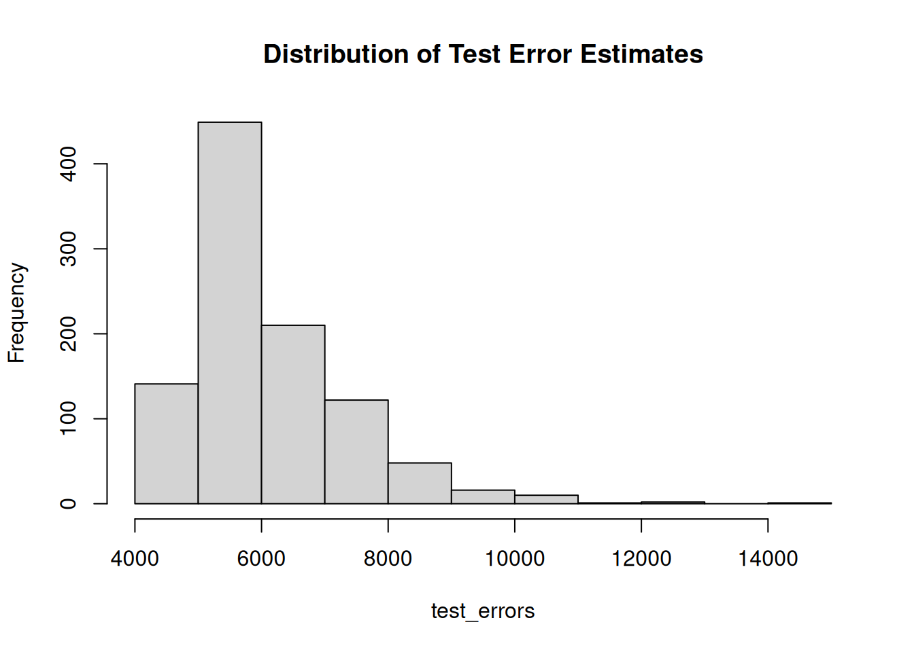
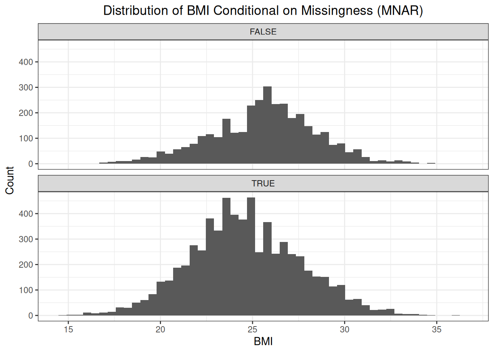
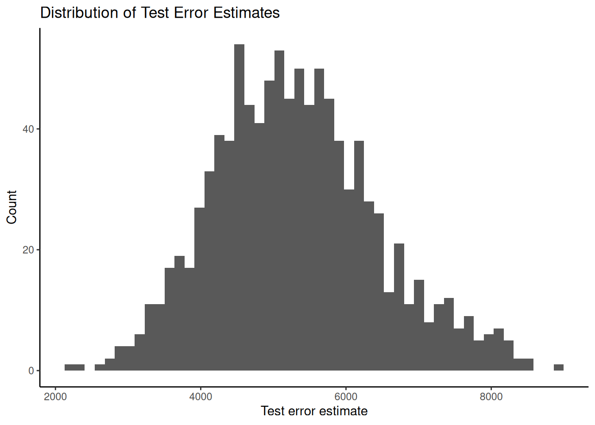

4 Distributions and Measures
This chapter focuses on distributions, how they are defined, and how they can be summarized.
4.1 Distributions
A distribution shows how the distinct values in a dataset are distributed across the observations in a dataset. We make a distinction between empirical distributions and theoretical distributions. An empirical distribution is based on observed data, while a theoretical distribution is based on theory (i.e., a probability mass function or a probability density function).
4.1.1 Empirical Distribution
We use the heart dataset to illustrate how an empirical distribution is constructed.
# Read the heart dataset
heart <- readr::read_csv(
file = fs::path(fs::path_wd(), "data", "heart.xls"),
show_col_types = FALSE
)
heart$Sex <- factor(heart$Sex)This dataset contains the variable \(Sex\) denoting the sex of the patient. There are two distinct observed values for this variable: \(M\) and \(F\). If we count the number of observations per distinct observed value of \(Sex\), then we obtain an empirical distribution. The dataset contains 193 observations with the value \(F\) for the variable \(Sex\) and 725 observations with the value \(M\) for the variable \(Sex\).
##
## F M
## 193 725This empirical distribution can be visualized using a barchart:

The above example shows the empirical distribution of a quantitative variable, so a discrete distribution. The empirical distribution of a quantitative variable is a continuous distribution. As an example, we look at the distribution of the variable \(Cholesterol\). Again, we take the set of distinct observed values of \(Cholesterol\) and check how these are distributed across the observations in the dataset. Or, in other words, we count the number of observations per distinct observed value of \(Cholesterol\).
##
## 0 85 100 110 113 117 123 126 129 131 132 139 141 142 147 149 152 153 156 157 159 160 161 163 164 165 166 167 168 169 170 171 172 173 174 175 176 177
## 172 1 2 1 1 1 1 2 1 1 1 2 1 1 2 2 1 1 1 1 1 6 2 2 2 1 4 3 2 2 2 3 2 2 1 4 1 6
## 178 179 180 181 182 183 184 185 186 187 188 190 192 193 194 195 196 197 198 199 200 201 202 203 204 205 206 207 208 209 210 211 212 213 214 215 216 217
## 1 2 3 2 5 1 4 3 6 2 4 2 4 6 2 7 6 7 6 3 4 6 3 7 9 3 3 6 7 5 4 9 6 7 7 6 9 4
## 218 219 220 221 222 223 224 225 226 227 228 229 230 231 232 233 234 235 236 237 238 239 240 241 242 243 244 245 246 247 248 249 250 251 252 253 254 255
## 6 8 10 5 6 10 6 7 6 4 5 4 9 5 3 6 7 5 6 6 4 4 8 4 2 7 4 6 8 3 6 5 5 1 3 4 11 3
## 256 257 258 259 260 261 262 263 264 265 266 267 268 269 270 271 272 273 274 275 276 277 278 279 280 281 282 283 284 285 286 287 288 289 290 291 292 293
## 5 3 7 2 8 3 1 8 6 4 4 5 5 6 6 4 3 5 6 7 4 5 1 1 2 3 7 5 4 2 2 2 6 6 2 3 4 1
## 294 295 297 298 299 300 302 303 304 305 306 307 308 309 310 311 312 313 315 316 318 319 320 321 322 325 326 327 328 329 330 331 333 335 336 337 338 339
## 4 5 4 5 2 2 2 4 2 4 3 2 6 4 3 2 2 1 3 1 3 1 2 1 1 2 2 1 1 1 2 1 1 2 1 1 1 2
## 340 341 342 344 347 349 353 354 355 358 360 365 369 384 385 388 392 393 394 404 407 409 412 417 458 466 468 491 518 529 564 603
## 2 3 3 1 1 1 1 1 1 1 1 1 1 1 1 1 1 1 2 1 1 1 1 1 1 1 1 1 1 1 1 1Again, a figure helps us to better visualize the distribution:
ggplot(heart, aes(x = Cholesterol)) +
geom_histogram(bins = 40) +
labs(title = "Distribution of Cholesterol") +
theme_classic()
Immediately, we see that a fraction of the observations shows the value \(0\) for \(Cholesterol\), which should be investigated.
4.1.2 Theoretical Distribution
A theoretical distribution shows how the values in the sample space of a variable are theoretically distributed across the observations in a dataset. A theoretical distribution is defined by a probability mass function (PMF) for categorical variables or a probability density function (PDF) for quantitative variables. A well-known example of such a distribution is the normal distribution, which is defined by the following PDF:
\[ f(X, \mu, \sigma) = \frac{1}{\sqrt{2 \pi \sigma^2}} \cdot e^{\frac{-(X - \mu)^2}{2 \sigma^2}} \]
This PDF can be used to construct a normal distribution with \(\mu = 50\) and \(\sigma = 5\).
ggplot(data.frame(x = c(25, 75)), aes(x)) + # Define x-axis range
stat_function(fun = dnorm, args = list(mean = 50, sd = 5), color = "blue", size = 1) +
labs(title = "Normal Distribution", x = "Value", y = "Density") +
theme_classic()
4.2 Measures
Distributions as defined above help us understand how a variable behaves. We can now use measures to summarize these distributions. There are measures of center and measures of dispersion. The first tell us something about where the bulk of the observations are, while the latter tells us something about how much variability there is in the dataset. It is important to assess these measures in combination with figures that visualize the distribution of the variable.
4.2.1 Measures of Center
There are three measures of center: mean, median, and mode. The mean is calculated as follows:
\[ \bar{X} = \frac{1}{n} \cdot \sum_{i = 1}^{n} X_i \]
The mean is not necessarily a value that is observed in the dataset. It is also sensitive to outliers. The median is obtained by sorting all observed values from smallest value to greatest value and selecting a value that splits this orderd list in two. So, half of the observations have an observed value that is less than or equal to the median, and half of the observations have an observed value that is greater than or equal to the median. The median is not sensitive to outliers. The mode is the value that most frequently occurs.
Let us get back to the above example investigating the distribution of \(Cholesterol\). The mean of 198.8 is smaller than the median of 223.
## [1] 198.7996## [1] 223## [1] "0"